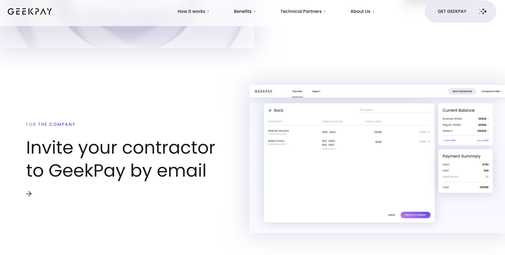

DART 349: INTRODUCTION TO WEB DESIGN
Website 1 *
Website 2
Website 3
Website 1:
geekpay.co
“Multi crypto payment platform from company to contractors.”
design:
The content is well aligned and spaced out. The color direction (focused on white/purple) makes the content
feel light and clean. The transition also makes the website feel very smooth.
usability:
The storyline to explain the objective of the product is straightforward and easy to navigate through.
The shortcuts helps in outlining the overall website and jump to the specific content.
content:
The imagery, the use of 3D perspective and the icons is coherent to the
content and makes the information more interesting and easy to grasp.
creativity:
While the interactivity of the 3D background is not always expected
or common for websites, the overall design of the website is standard and not unique or surprising.
